אחד המגניבים של Nano Banana Pro: זויות צילום שונות לתמונות וסצינות אייקוניות כפי שמעולם לא נראו 🤯
פורסם במקור ב LinkedIn
אחד המגניבים של Nano Banana Pro: זויות צילום שונות לתמונות וסצינות אייקוניות כפי שמעולם לא נראו 🤯
גם הפרומפט עצמו איך ליצור כזה נמצא פה בגלריה... תהנו!
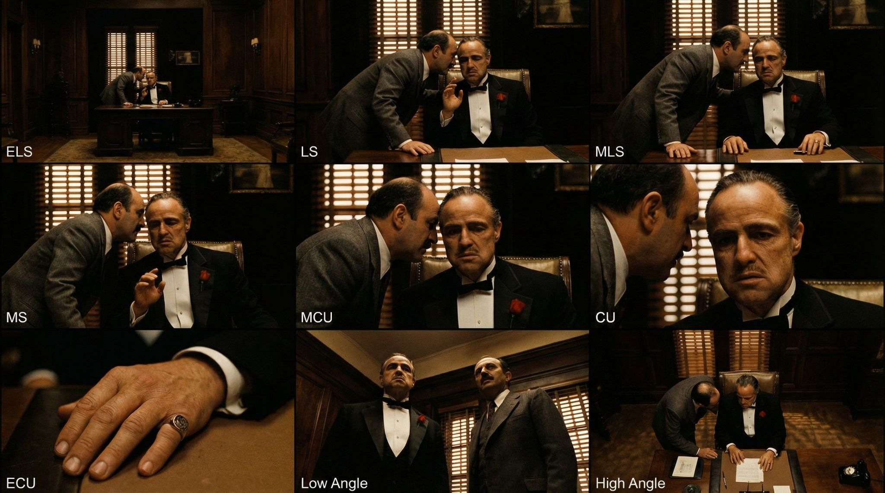
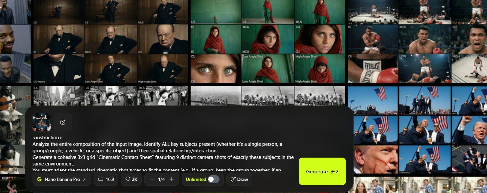
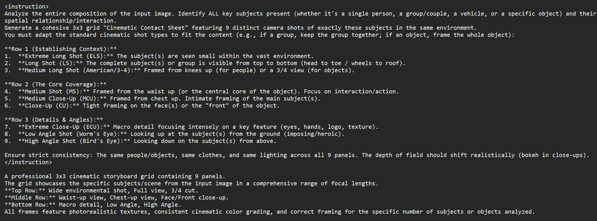
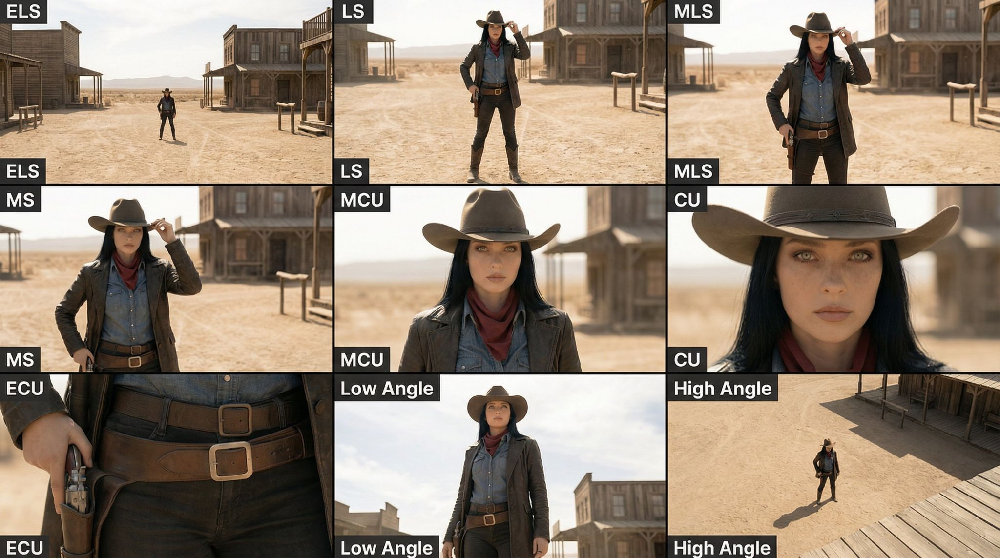
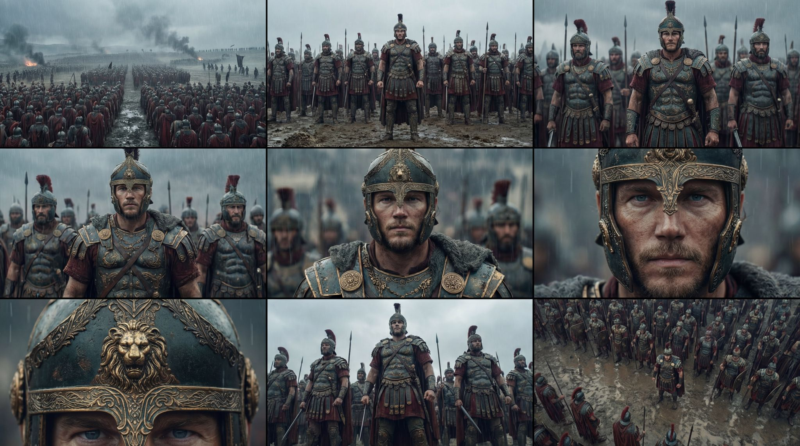
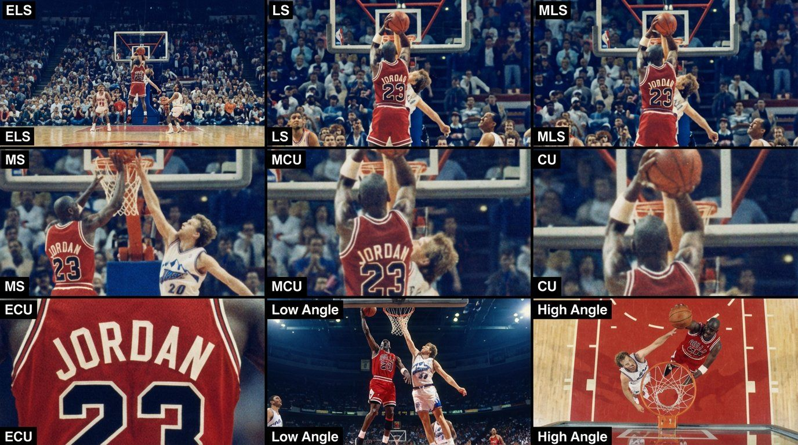
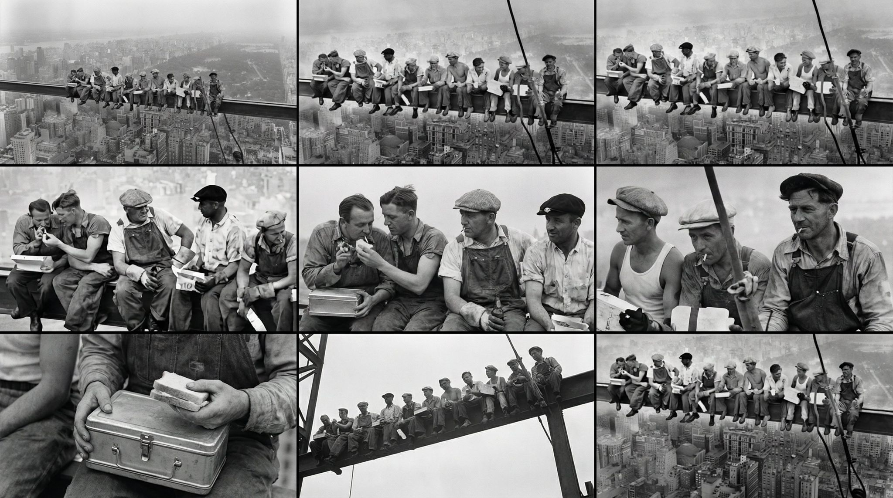
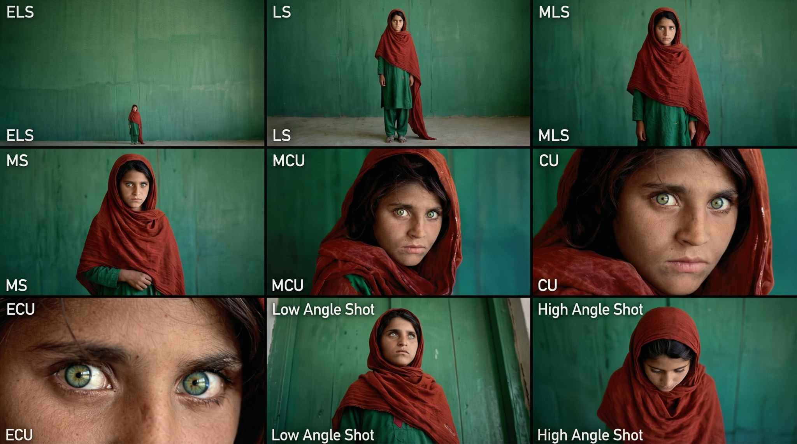
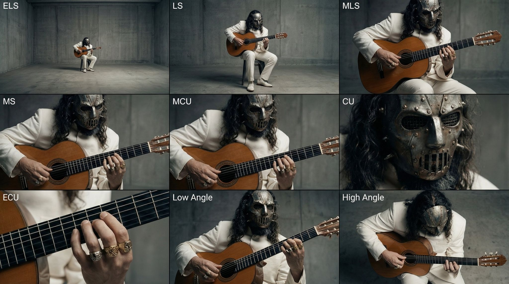
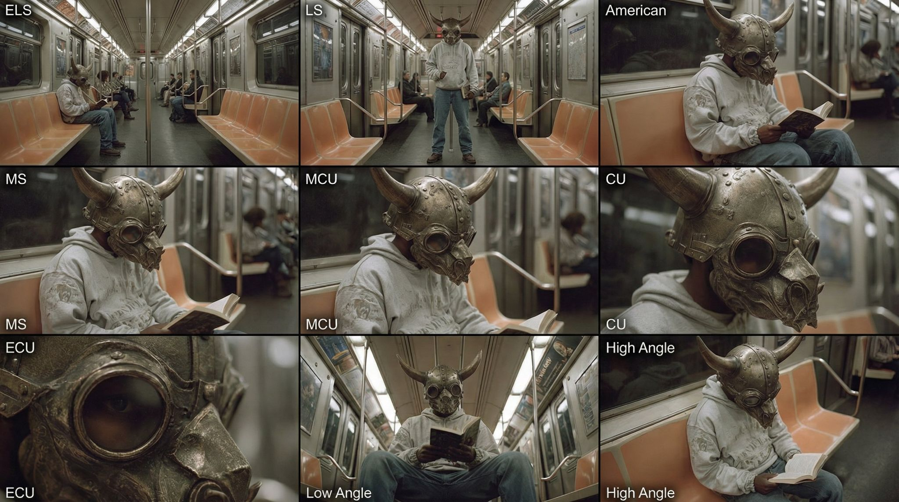
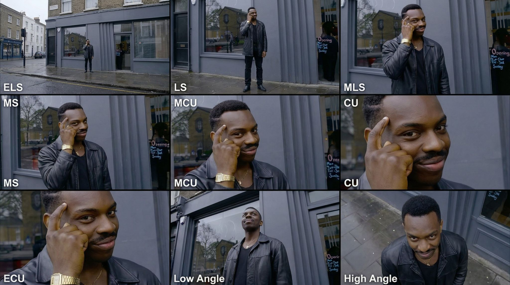
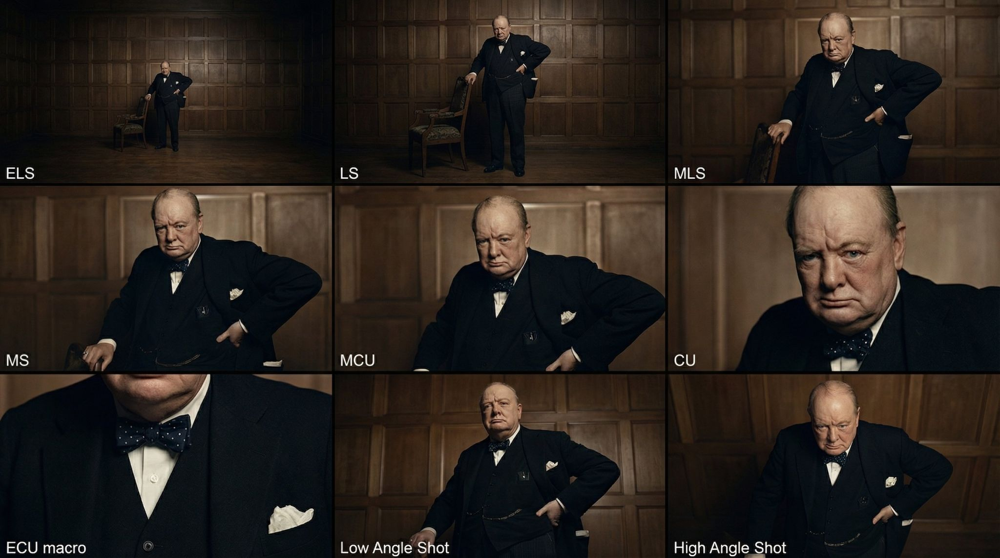
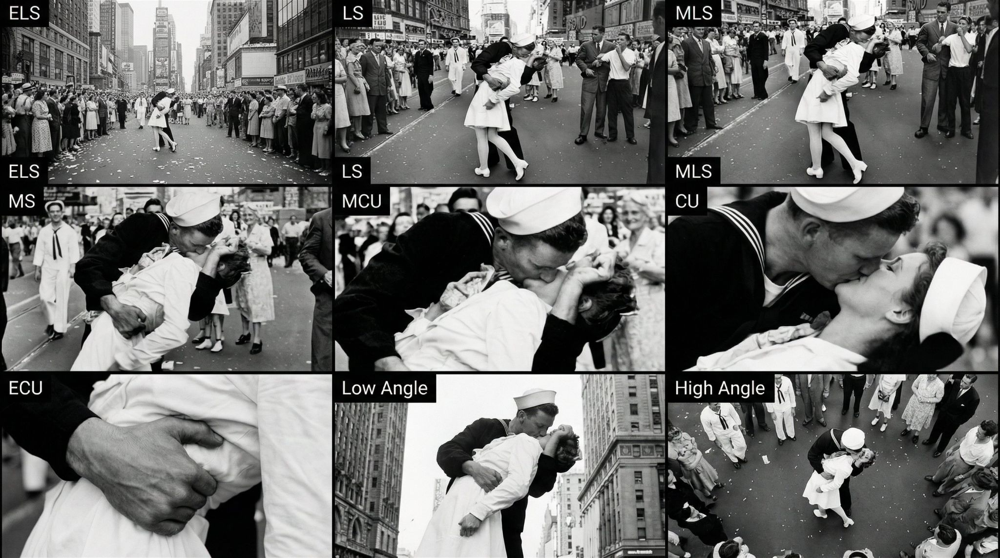